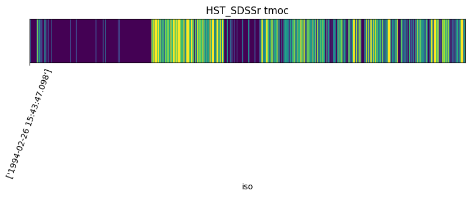

[1]:
# TimeMOC usage
[ ]:
from mocpy import TimeMOC
from astropy.time import Time, TimeDelta
from astroquery.vizier import Vizier
Loading a TimeMoc from a fits file¶
[2]:
time_moc = TimeMOC.from_fits(
"http://alasky.u-strasbg.fr/HST-hips/filter_SDSSr_hips/TMoc.fits",
)
time_moc.plot(title="HST_SDSSr tmoc")

Loading a TimeMoc from an astropy table¶
[5]:
viz = Vizier(columns=["*", "_RAJ2000", "_DEJ2000"])
viz.ROW_LIMIT = -1
table = viz.get_catalogs("II/285")[1]
print(table)
Name Ref JD Vmag U-B B-V V-Rc Rc-Ic V-Ic
d mag mag mag mag mag mag
------ --- ------------ ------ --- ------ ------ ----- ------
T ANT 978 2443914.3750 -- -- 0.802 0.391 -- 0.856
T ANT 978 2443915.4410 -- -- 0.861 0.460 -- 0.803
T ANT 978 2444297.4250 9.360 -- 0.791 0.431 -- 0.840
T ANT 978 2444298.4760 9.520 -- 0.853 0.463 -- 0.903
T ANT 978 2444299.4940 9.720 -- 0.927 0.484 -- 0.953
T ANT 978 2444300.4070 9.575 -- 0.809 0.441 -- 0.872
T ANT 978 2444301.4180 8.881 -- 0.499 0.309 -- 0.608
T ANT 978 2444302.4110 9.139 -- 0.661 0.392 -- 0.754
T ANT 976 2451619.3105 9.738 -- 0.910 -- -- 0.959
T ANT 976 2451619.3828 -- -- -- -- -- 0.974
... ... ... ... ... ... ... ... ...
NN VUL 950 2445204.2187 14.102 -- 1.372 -- -- --
NN VUL 950 2445205.2265 14.075 -- 1.423 -- -- --
NN VUL 950 2445207.2304 14.110 -- 1.455 -- -- --
NN VUL 950 2445208.2539 14.090 -- 1.512 -- -- --
NN VUL 950 2445209.2070 14.109 -- 1.502 -- -- --
NN VUL 950 2445210.2187 14.141 -- 1.553 -- -- --
NN VUL 950 2445211.2031 14.186 -- 1.528 -- -- --
NN VUL 950 2445212.2304 14.227 -- 1.588 -- -- --
NN VUL 950 2445213.2109 14.293 -- 1.574 -- -- --
NN VUL 950 2445214.2109 14.408 -- 1.524 -- -- --
Length = 70031 rows
[6]:
%%time
table_moc = TimeMOC.from_times(Time(table["JD"], format="jd", scale="tdb"))
table_moc.plot(title="2nd table of II/285 tmoc")
# print characteristics such as the time of the first/last observations
print("Time of the first observation:", table_moc.min_time.iso)
print("Time of the last observation:", table_moc.max_time.iso)
# the total duration of the observation times
print(f"Total duration: {table_moc.total_duration.jd} jd")
# the order of the TimeMoc
print("max order:", table_moc.max_order)
Time of the first observation: ['1978-05-10 20:09:28.672']
Time of the last observation: ['2004-04-22 16:56:36.350']
Total duration: 227.42448355555555 jd
max order: 31
CPU times: user 245 ms, sys: 6.74 ms, total: 251 ms
Wall time: 254 ms
Filtering an astropy table with a TimeMoc¶
[7]:
# filtering the table through the tmoc created from the HST_SDSSr fits file
rows = time_moc.contains_with_timeresolution(
times=Time(table["JD"], format="jd", scale="tdb"),
keep_inside=True,
delta_t=TimeDelta(3600, format="sec", scale="tdb"),
)
print(table["JD"][rows])
JD
d
------------
2453021.3273
2453022.4863
2453022.5731
2453022.4809
2453021.3261
2453022.4907
2453022.3327
2453021.3492
2453021.3520
2453022.3720
...
2453022.3057
2453022.4917
2453021.3392
2453022.4856
2453022.4807
2453022.6028
2453022.3294
2453022.4841
2453022.5714
2453022.4899
Length = 233 rows
TimeMoc operation examples :¶
Intersection of 2 tmocs : (HST_SDSSr) INTER (2nd table of II/285)
[8]:
result = table_moc.intersection_with_timeresolution(
time_moc,
delta_t=TimeMOC.order_to_time_resolution(9),
)
time_moc.plot(title="HST_SDSSr tmoc")
table_moc.plot(title="2nd table of II/285 tmoc")
result.plot(title="(HST_SDSSr) INTER (2nd table of II/285) tmoc")
# print the max order of all the tmocs. Result tmoc must be of order 9
print("HST_SDSSr max order : ", time_moc.max_order)
print("2nd table of II/285 max order : ", table_moc.max_order)
print("(HST_SDSSr) INTER (2nd table of II/285) max order : ", result.max_order)
HST_SDSSr max order : 41
2nd table of II/285 max order : 31
(HST_SDSSr) INTER (2nd table of II/285) max order : 9
Augment and Diminish a tmoc
[9]:
result.add_neighbours()
result.plot(title="(HST_SDSSr) INTER (2nd table of II/285) augmented tmoc")
result.remove_neighbours()
result.plot(title="(HST_SDSSr) INTER (2nd table of II/285) diminished tmoc")
Complement of a TimeMoc
[ ]:
complemented_tmoc = result.complement()
complemented_tmoc.plot(
title="Complement of (HST_SDSSr) INTER (2nd table of II/285)",
view=(result.min_time, result.max_time),
)